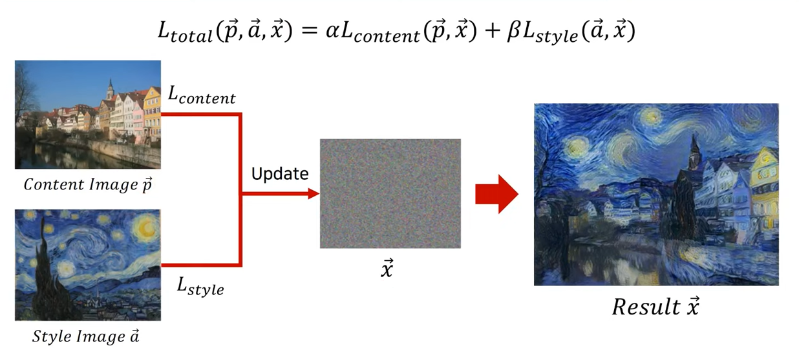
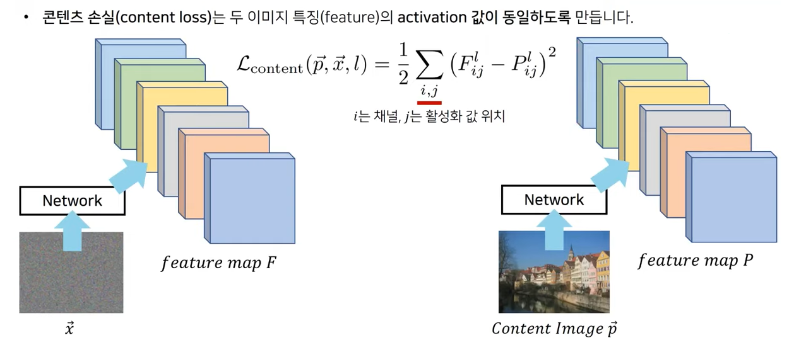
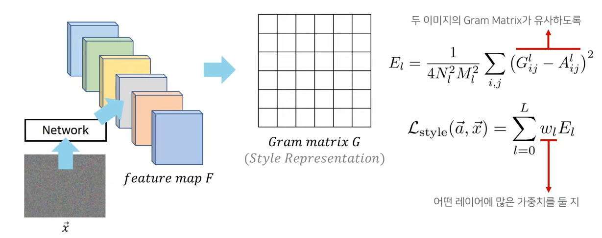
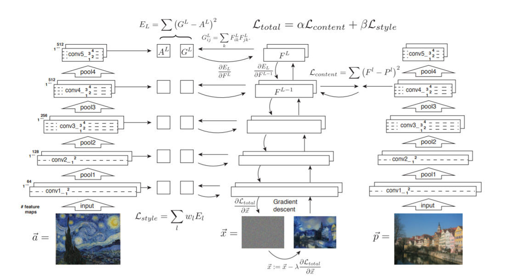
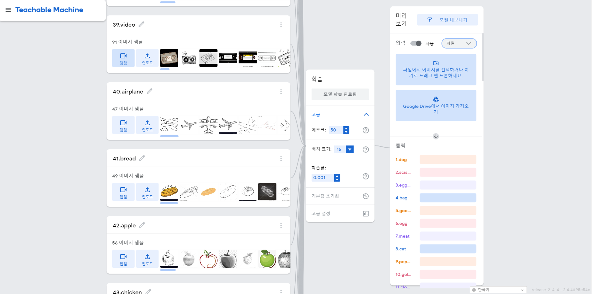
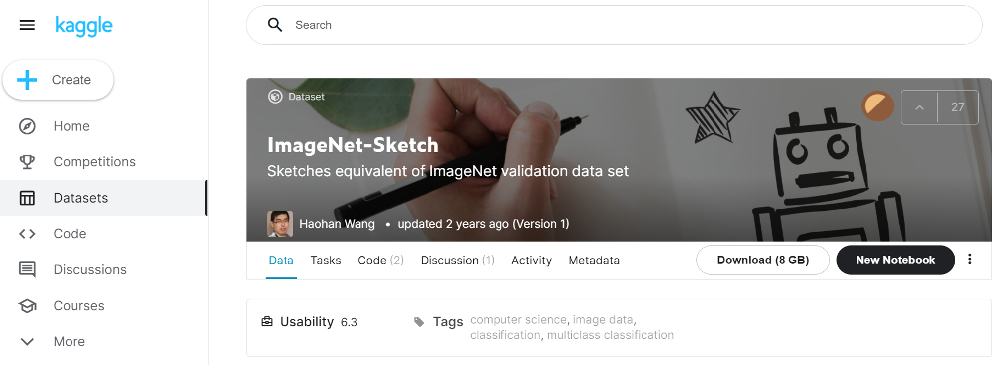
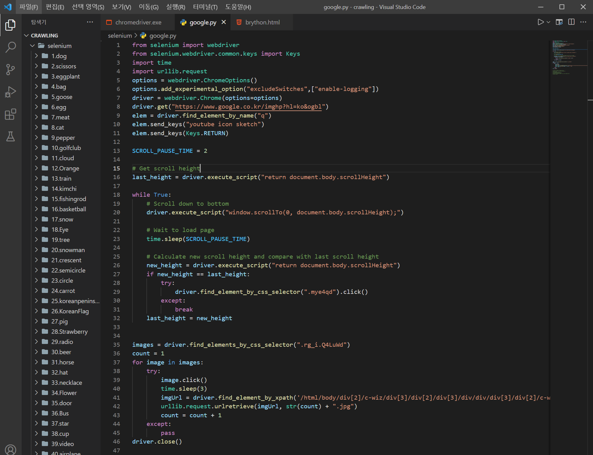
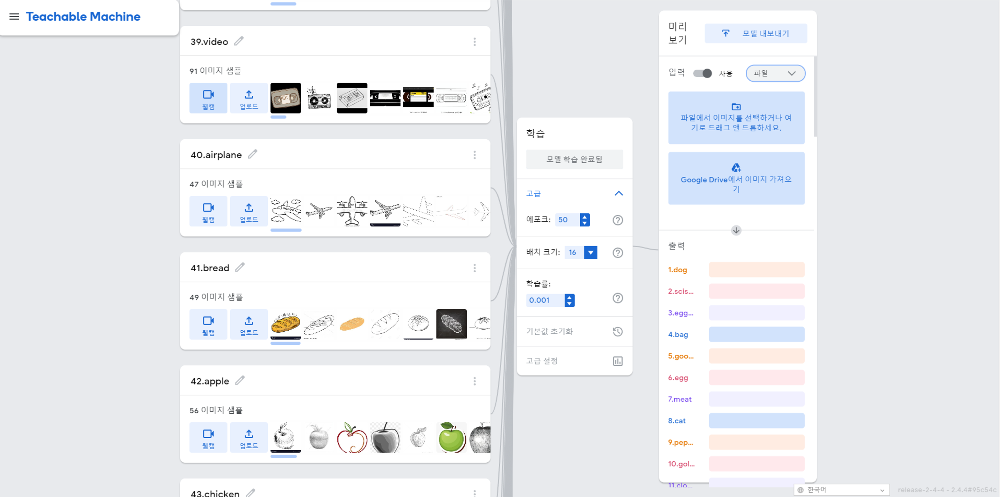

Instruction
이 사이트는 이미지 데이터를 활용해 그림과 사진을 서로 변환시키는 사이트입니다.
왼쪽 Sidebar를 보면 Photo to Drwaing은 그림형태로 바꾸고 싶은 베이스 사진을 올리고 어떤 형태의 스타일로 만들고 싶은지 스타일 사진을 업로드하면 그림형태로 출력됩니다. 또한 Drawing to Photo는 간단한 그림 sketch를 올리게되면 그와 비슷한 사진을 출력해냅니다.
이미지를 업로드하게 되면 해당 이미지를 AI가 판단하여 결과를 출력하게 됩니다. 하단은 변환된 이미지 결과 샘플을 보여주며 해당 인공지능의 성능을 보여줍니다.
Photo to Drawing - Neural Style Transfer
1. 체험
1 . 베이스 사진
2 . 꾸미기 스타일 사진
변 환 중 변 환 완 료!
2. 상세설명
1) Neural Style Transfer
neural style transfer는 가중치를 변경하는 타 A.I기술과 다르게 사전에 학습된 CNN모델을 이용하여 고정된 VGG네트워크의 가중치 값으로 이미지의 loss 값을 줄이는 방향으로 이미지를 업데이트해 최적화하는 기술입니다.
해당 기술은 Content Image와 Style Image 2장을 사용하기 때문에 2개의 loss값이 있어야 하고 두 개의 loss값을 동시에 줄여가며 이미지를 업데이트 해야합니다.
이때 업데이트 되는 이미지는 업로드한 이미지와 같은 크기의 노이즈 이미지 벡터x이며 이 노이즈 이미지는 loss값을 줄일때마다 업데이트 되어 결과를 보여주는 이미지 역할을 하게됩니다.
하지만 두 이미지는 틀에 해당하는 이미지와 분위기에 해당하는 이미지로 확실히 구분되어야 하기 때문에 각각의 이미지 loss값은 content loss값과 style loss값으로 구분하여 서로 다른 방법으로 줄여야 합니다.
2) Content loss
먼저 content loss에 대해 살펴보면 다음과 같습니다.
우선 Content Image를 업로드할 경우 Content Image와 동일한 크기의 노이즈 이미지가 생성됩니다.
그리고 두 개의 이미지를 사전 학습된 CNN에 넣으면 서로 다른 Feature Map이 생성되는데 그 때의 Feature Map의 차이를 줄여나가 동일하게 만드는 방향으로 loss값을 줄여나가는 방식을 사용합니다.
즉 두 이미지의 feature의 activation값을 동일하도록 만들어 손실값을 줄이는 방법입니다.
수식을 보면 i는 채널을 나타내고, j는 i에 해당하는 채널의 위치값을 나타내고 , l은 레이어의 번호를 나타냅니다.
이러한 수식을 이용해 노이즈의 feature map F와 content의 feature map P를 1대1로 비교하여 유사해지도록 하여 loss값을 줄인다는 의미의 수식으로 구하면됩니다.
3) Style loss
다음은 style loss입니다.
style loss에서 가장 중요하게 작용되는 것은 gram matrix입니다.
Gram Matrix는 CNN을 통해 얻은 서로 다른 feature값의 상관관계를 나타낸 값을 행렬로써 나타낸 값입니다.
즉, 수식을 보면 k는 각각의 feature의 원소를 나타내고 서로다른 feature i와 j의 원소값을 곱한 후 더한 값을 행렬로 나타낸 값이라 보면되고 값이 크게 나오면 상관관계가 높고 작게 나오면 상관관계가 낮다는것을 의미합니다.
다시 style loss구하는 법의 수식을 살펴보면 G는 노이즈 이미지 x의 gram matrix고 A는 style image의 gram matrix를 의미하고 각각의 gram matrix를 유사하게 해서 차이가 작아지도록 한다는 의미의 수식입니다.
그리고 해당 값이 너무 커지는것을 막고자 원소의 개수로 나누어주면 El이라고 하는 값이 나오게 되는데 여기서 EL은 특정 레이어 L에 대한 gram matrix의 차이값이 됩니다.
이렇게 모든 레이어에 대한 EL 값을 구해 하이퍼파라미터 가중치 값을 곱하면 스타일 loss값을 얻을 수 있게 됩니다.
즉, style Image를 업로드할 경우 업데이트 해야 할 노이즈 값의 Gram Matrix와 업로드한 Style Image의 Gram Matrix의 차이를 줄여 유사하도록 업데이트하는 방법을 사용합니다.
이러한 상관관계가 유사하도록 업데이트 하는 방법이라고 볼 수 있습니다.
4) 정리
전체적인 흐름을 보면 다음과 같습니다.
왼쪽은 style image의 style loss값을 줄여나가는 모습이고 오른쪽은 content image의 content loss값을 줄여나가는 모습입니다.
스타일 loss값의 과정을 보면 노이즈 값의 gram matrix와 style image의 gram matrix의 차이를 줄이는 모습을 볼 수 있고 content loss 과정을 보면 노이즈의 feature map과 content image의 feature map의 차이를 줄여나가는 모습을 볼 수 있습니다.
이 두 이미지의 loss값에 대한 선형합을 하게 되면 토탈 loss값이 나오게 되고 마지막으로 해당 loss값을 노이즈 x로 미분하며 gradient descent 방식으로 노이즈를 업데이트 해나가는 기술이라는 것을 알수있습니다.
5) 예시

참고논문 : https://rn-unison.github.io/articulos/style_transfer.pdf
Drawing! - For Teachable Machine
1. 상세설명
아래 Drawing to Photo를 위한 그림판 기능입니다.
스케치를 자유롭게 하시고 저장한 후 이미지를 업로드하시면 A.I가 판단하여 그와 비슷한 사진을 출력할 것입니다.
Drawing to Photo - Teachable Machine
1. 체험

그림을 사진으로!

Loading...
분석중입니다...
2. 상세설명
1) Teachable Machine

drawing to photo에 사용된 teachable machine은 구글이 2019년도에 출시한 서비스이며 개발용부터 교육용까지 다양한분야에서 사용되는모델입니다.
사진, 음악, 행동을 데이터화 시킬 수 있고 각각의 데이터를 batch size와 epoch값을 정한후 학습시키면
웹, 앱 등에서 응용하여 사용할 수 있게 됩니다.
코드는 tensorflow를 사용하면 python형태로 tensorflowjs로 생성하면 javascript형태로 tensorflowlite를 사용하면 java형태로 사용가능하여 앱으로도 구성할 수 있습니다.
해당 프로젝트에선 web구성을 위해 tensorflowjs를 사용했고
스케치를 인식시키기 위한 데이터는 구글 크롤링과 캐글을 이용했습니다.
우선 스케치 선별을 위한 단어 선정을 진행했고 주로 국어사전에서 명사형을 따로 분류한 후
명사형 중에서도 가장 통일된 형태를 지닌 명사를 선정했습니다.
이후 선정된 명사형을 이용하여 1차적으론 캐글의 ImageNet 스케치 데이터를 수집했고
2차적으로 Python selenium 구글 크롤링을 통해 "명사형단어 + sketch"의 형태로 검색하여 모델을 수집했습니다.
이후 수집된 모델들은 teachable machine에 업로드 하였습니다.
다음 teachable machine 내에 업로드한 데이터에 대한 인공적인 전처리를 진행했고
이때 batch_size는 16, epoch값은 50으로 설정하여 학습시켰습니다.
마지막으로 업로드 시 결과값 혹은 결과수치 대신 결과사진을 출력시키는 코딩을 진행하여 웹에 적용시켰습니다.
2) Data Collection


그림을 사진으로!
분석중입니다...
2. 상세설명
1) Teachable Machine
drawing to photo에 사용된 teachable machine은 구글이 2019년도에 출시한 서비스이며 개발용부터 교육용까지 다양한분야에서 사용되는모델입니다. 사진, 음악, 행동을 데이터화 시킬 수 있고 각각의 데이터를 batch size와 epoch값을 정한후 학습시키면 웹, 앱 등에서 응용하여 사용할 수 있게 됩니다.
코드는 tensorflow를 사용하면 python형태로 tensorflowjs로 생성하면 javascript형태로 tensorflowlite를 사용하면 java형태로 사용가능하여 앱으로도 구성할 수 있습니다.
해당 프로젝트에선 web구성을 위해 tensorflowjs를 사용했고 스케치를 인식시키기 위한 데이터는 구글 크롤링과 캐글을 이용했습니다.
우선 스케치 선별을 위한 단어 선정을 진행했고 주로 국어사전에서 명사형을 따로 분류한 후 명사형 중에서도 가장 통일된 형태를 지닌 명사를 선정했습니다. 이후 선정된 명사형을 이용하여 1차적으론 캐글의 ImageNet 스케치 데이터를 수집했고 2차적으로 Python selenium 구글 크롤링을 통해 "명사형단어 + sketch"의 형태로 검색하여 모델을 수집했습니다. 이후 수집된 모델들은 teachable machine에 업로드 하였습니다.
다음 teachable machine 내에 업로드한 데이터에 대한 인공적인 전처리를 진행했고 이때 batch_size는 16, epoch값은 50으로 설정하여 학습시켰습니다.
마지막으로 업로드 시 결과값 혹은 결과수치 대신 결과사진을 출력시키는 코딩을 진행하여 웹에 적용시켰습니다.

{kind=link}
{kind=link}
{kind=link}
{kind=link}
{kind=link}
{kind=link}
{kind=link}
{kind=link}